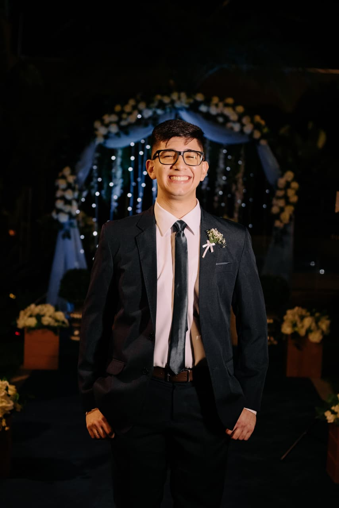

Daniel Greffe | WDD 130

Olá! Meu nome é Daniel Greffe e sou de Campo Grande, Brasil. Gosto muito assistir filmes e programar. Espero aumentar meus conhecimentos em desenvolvimento web para ser um programador de sucesso. Atualmente trabalho como assistente de Gerente de Propriedades da igreja (A Igreja de Jesus Cristo dos Santos dos Últimos Dias).